1a - Straight (fine) Very soft, shiny, hard to hold a curl, hair tends to be oily, hard to damage.
1b - Straight (medium) Has lots of body. (i.e. more volume, more full).
1c - Straight (coarse) Has lots of body. (i.e. more volume, more full).
2a - Wavy (loose waves) Can accomplish various styles. Loose “S” pattern. Hair sticks close to the head.
2b - Wavy (loose waves) Can accomplish various styles. Loose “S” pattern. Hair sticks close to the head.
2c - Wavy (wide waves) Hair has wider waves. Resistant to styling. Hair tends to be frizzy.
3a - Curly (loose curls) Thick & full with lots of body. Definite curl pattern. Hair tends to be frizzy. Can have a combination texture.
3b - Curly (tight curls) Medium amount of space of the curls. Can have a combined texture.
3c - Curly (corkscrews) Tight curls in corkscrews. The curls are very tightly curled.
4a - Kinky (defined coil) Tightly coiled. Has a more of a defined kink pattern.
4b - Kinky (z coil) Tightly coiled. Little less defined kink pattern. Has more of a “Z”-shaped pattern.
4c - Kinky (tight coil) Tightly coiled. Almost no visible defined kink pattern, unless seen from up close. Has more of a very tight “Z”-shaped pattern.